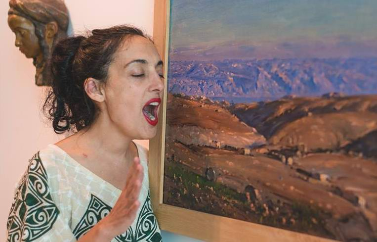
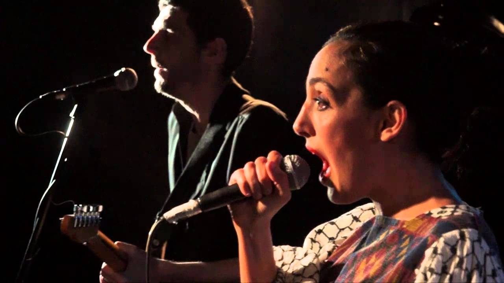

СОКРОВИЩА ИВРИТСКИХ СЛОВ Виктории Хана
Виктория Хана верит, каждым произносимым словом мы созидаем нечто, и что пространство, наполненное пением, подобно живописному полотну. Определение «певица» не вмещает использование ею голосового диапазона и обращения со звуком, когда речь идет о действе, названном ею "Голос Слова".
источник habama.co.il (перевод с иврита: Эфраим Калиш)
Виктория Хана - оманит-коль (ивр.: саунд-артист). Такое поределение дал ей театральный деятель Дуди Мааян, и оно, пожалуй точно выражает суть творчества, исследующего звуки и слова.
 - "Голос Слова" - фраза из откровений мудрецов рабби Шимона Бар Йохай и его учеников. Этот текст, Виктория поет на арамейском языке. Он говорит о том, что все мы на самом деле спим. Но нет времени на раскачку, каждую ночь мы должны ожидать света, приходящего утром, чтобы перевернуть горькое в сладкое, тьму на свет, и проснуться наконец ото сна, в который мы погружены. Мы люди, населяющие этот мир, находимся в полусне".
- "Голос Слова" - фраза из откровений мудрецов рабби Шимона Бар Йохай и его учеников. Этот текст, Виктория поет на арамейском языке. Он говорит о том, что все мы на самом деле спим. Но нет времени на раскачку, каждую ночь мы должны ожидать света, приходящего утром, чтобы перевернуть горькое в сладкое, тьму на свет, и проснуться наконец ото сна, в который мы погружены. Мы люди, населяющие этот мир, находимся в полусне".
"Все тексты, на которых основывается творчество Ханы - из древне еврейских источников. Также и другие тексты – «Сэфер Йецира» (Книга Творения), «Песнь о любви к Торе», написанная раби Шимоном Бар Йохай, тексты из «Песни Песней», молитва о ниспослании дождя, которая на самом деле основывается на ритуалах, звучащих при повторении ивритского алфавита. Есть молитва, произносимая после того, как человек выходит из уборной. Это удивительная молитва благодарности Богу о том, как чудесно Он устроил тело человека и предусмотрел в нем все совершенно, так чтобы он было способно действовать."
 Связь Ханы с древнееврейскими текстами, писаниями раввинов, молитвами объяснима. Она выросла в Иерусалиме, в религиозной среде, погруженной в эти тексты и писания с самого младенчества. Ее отец – сефардский раввин наполнил свой дом книгами. И книги в этом доме живут: их постоянно берут, чтобы читать, вникать, впитывать их запах, проговаривать. И цель в том, чтобы произносить эти тексты и таким образом через говорение созидать. «Когда я поднимаюсь на сцену и пою, вся эта власть по-прежнему присутствует во мне», - говорит Хана. Она постоянно пребывает в диалоге с подобными текстами.
Связь Ханы с древнееврейскими текстами, писаниями раввинов, молитвами объяснима. Она выросла в Иерусалиме, в религиозной среде, погруженной в эти тексты и писания с самого младенчества. Ее отец – сефардский раввин наполнил свой дом книгами. И книги в этом доме живут: их постоянно берут, чтобы читать, вникать, впитывать их запах, проговаривать. И цель в том, чтобы произносить эти тексты и таким образом через говорение созидать. «Когда я поднимаюсь на сцену и пою, вся эта власть по-прежнему присутствует во мне», - говорит Хана. Она постоянно пребывает в диалоге с подобными текстами.
Почти неизбежно возникает вопрос о том, каким образом, воспитанная в еврейской ортодоксальной среде женщина, становится певицей? (как известно, в ортодоксальной среде это совершенно недопустимо).

Религиозная среда закрыта. Женщина там действительно занимает иное, в сравнении с мужчиной, место с точки зрения ее самовыражения. Когда мужчина ведет молитву, то находящиеся за его спиной женщины произносят свою молитву шепотом или вообще лишь бесслышно двигают устами. Эта сила с которой я выросла, когда только губы приходят в движение без того, чтобы издавать звук, вызывало во мне особенно переживание чего-то физического, что явно присутствует.
- «Если я пытаюсь найти другую параллель, это как ты находишься в общественном месте и у тебя нет гитары, но ты перебираешь руками, как представляя себя играющей, и стобой происходит нечто, почти на физическом уровне на твоих пальцах, как если бы ты играла. Это что-то, что не может произойти, во время настоящей игры на гитаре. И тогда, когда ты действительно возвращаешься к игре на гитаре, у тебя складывается особенная с ней связь. Вам знакомо это чувство?»
- «То же самое происходит, когда ты только двигаешь губами, не произнося звука. Ты соединяешься с источником, с тем, что происходит в устах, когда звук в них еще не родился. И это потрясающая сила, которая позволяет мне соединяться со словами как бы по-другому. Часто, когда есть какой-то запрет и нечто хранится внутри, это созидает великую силу (подобно сжимающейся пружине). И когда это таки вырывается наружу, это выходит иначе, чем, когда такие ограничения отсутствуют.
И иногда из меня исходит пение, не зависимое ни от чего. Просто истекает из меня и происходит нечто, что происходит до того, как слово выходит. Мне очень интересно исследовать - что побуждает мой голос вырваться, начать звучать тогда, когда он ДОЛЖЕН выйти, а не тогда, когда сижу себе спокойно и пою. Типа S.O.S! Ужасно интересно для меня исследовать это состояние.
Я занимаюсь исследованием физической силы звука и слова". Я отношусь к своему голосу как чему-то, что я вижу, как он выходит, как нечто очень физическое.
Я стараюсь найти связь живописи и звука. Я отношусь к пространству, в котором человек поет, как к холсту, или листу бумаги. Тело уподоблено чернильной ручке, а голос – чернилам, которыми мы рисуем в воздухе.
"Интересен текст раби Авраама Абулафии, жившего в Испании в 12 веке. Он посвятил всю свою жизнь действию букв и их сочетаний. И он написал удивительные вещи, которые дают много вдохновения. Он сравнивает чернила с процессом писания, с процессом творчества человека. Я думаю, в той же мере, в каждом слове, произносимом тобой, ты творишь нечто.
Ведь и мир был сотворен произнесенным словом Всевышнего. И стало так. Сегодня мы собираемся на концерт, послушать музыку. Но в древности, голос поэзии и слова предназначались не столько для того, чтобы люди пришли послушать музыку, но для их исцеления, ЧТОБЫ В ИХ ЖИЗНИ ПРОИЗОШЛО НЕЧТО, или чтобы просить о чем-то Бога. Использование звука вытекало из желания произвести, создать нечто.
Читайте также "МУЗЫКА ЕВРЕЙСКИХ ТЕКСТОВ. Виктория Хана"